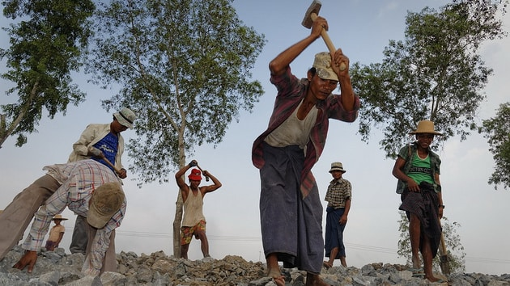
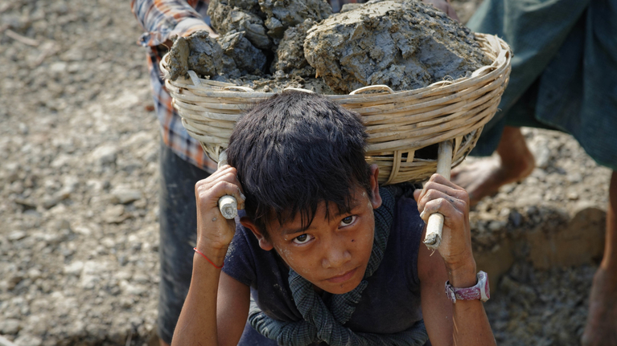
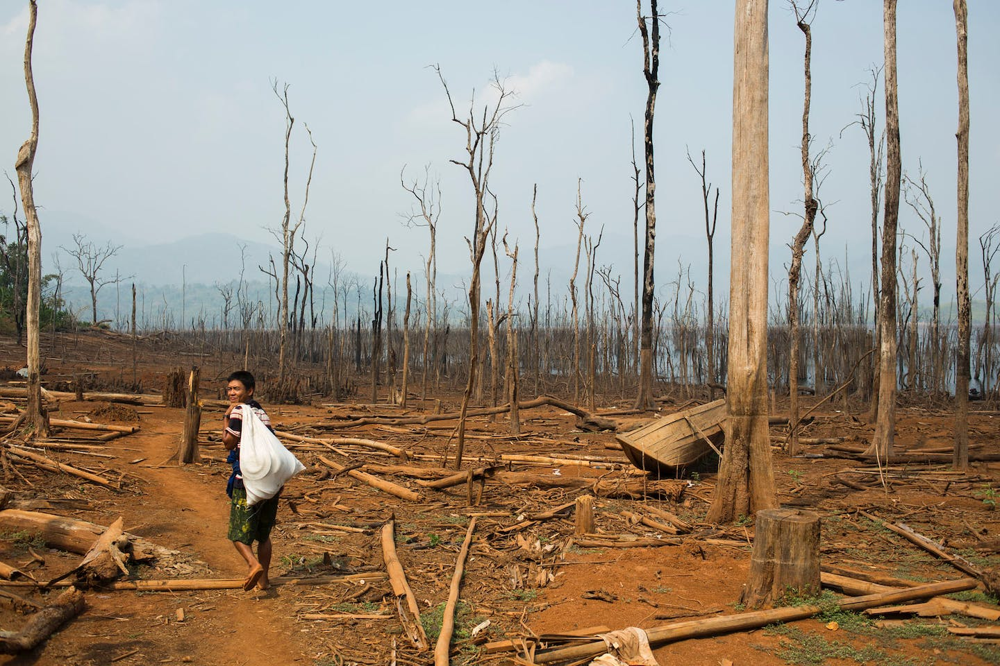
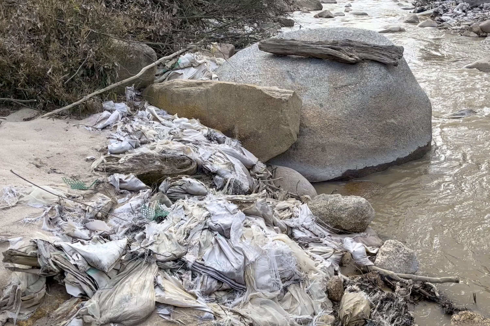
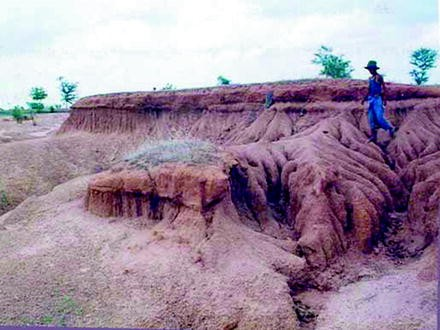

| Introduction | Extraction | Importance and Usage | Relevant Countries | Impacts | Bibliography |
Impacts of Rare Earths
The mining of Rare earth minerals including tin, tungsten, and tantalum, which are used in many high-tech devices such as smartphones, electric vehicles, and renewable energy technologies has led to numerous human rights violations, including forced labor, and child labor, which are causing the occurence of many hazardous diseases in these workers.
Forced labor is a significant issue in Myanmar's rare earth industry, with workers being forced to work long hours in dangerous and unhealthy conditions without receiving adequate compensation. The use of forced labor violates international human rights laws and treaties, including the International Labour Organization's Forced Labour Convention.
Workers in Myanmar's rare earth mines are often recruited through deceptive means and promised good wages and working conditions. However, upon arrival at the mine, they are subjected to exploitative working conditions, including forced labor. They are often required to work long hours, sometimes up to 14 hours a day, with no days off. This leaves them exhausted and with little time to rest or spend with their families.
The working conditions in rare earth mines are also dangerous and unhealthy. Workers are often exposed to hazardous chemicals and are not provided with adequate protective gear. As a result, they suffer from respiratory problems, skin rashes, and other health issues. Additionally, accidents in the mines are common, and workers often suffer from injuries or even death due to the lack of safety measures.
Workers in the rare earth industry in Myanmar are also subjected to physical and verbal abuse, including beatings and verbal insults. These abuses are often used to punish workers who do not meet their production targets or who attempt to resist their exploitation.
The use of forced labor in the rare earth industry is particularly egregious when it comes to children. Children as young as 10 years old are forced to work in the mines, often in dangerous and unhealthy conditions. These children are not provided with an education and are at risk of long-term physical and mental health problems.
The government of Myanmar has been criticized for its failure to address the issue of forced labor in the rare earth industry. The government has been accused of turning a blind eye to the issue and failing to enforce labor laws and regulations.
Therefore, forced labor is a significant issue in Myanmar's rare earth industry, with workers being subjected to exploitative working conditions, physical and verbal abuse, and long hours without adequate compensation. The government of Myanmar must take immediate action to address this issue and protect the rights of workers in the rare earth industry. Additionally, the international community must hold the government accountable and work to support the human rights of those affected by forced labor in Myanmar's rare earth industry.
Child labor is a significant issue in Myanmar's rare earth industry, with children as young as 10 years old being forced to work in the mines. These children are often subjected to dangerous and unhealthy working conditions without receiving an education or adequate compensation.
Children are particularly vulnerable to exploitation in the rare earth industry due to their lack of legal protection and their vulnerability to deception and coercion. Many children are recruited through deceptive means and promised good wages and working conditions. However, upon arrival at the mine, they are subjected to exploitative working conditions and are often forced to work long hours with little rest or time to spend with their families.
Children in the rare earth industry in Myanmar are often required to perform the same tasks as adult workers, including handling hazardous chemicals and operating heavy machinery. These children are not provided with protective gear, putting them at risk of serious health problems, including respiratory problems and skin rashes. Additionally, accidents in the mines are common, and children are at risk of injury or death due to the lack of safety measures.
The use of child labor in the rare earth industry also has long-term consequences for the children's education and future opportunities. Children who are forced to work in the mines are often denied an education and are at risk of dropping out of school altogether. This limits their future job opportunities and perpetuates the cycle of poverty.
The government of Myanmar has been criticized for its failure to address the issue of child labor in the rare earth industry. The government has been accused of turning a blind eye to the issue and failing to enforce labor laws and regulations that protect children.
Therefore, child labor is a significant issue in Myanmar's rare earth industry, with children being forced to work in dangerous and unhealthy conditions without receiving an education or adequate compensation. The government of Myanmar must take immediate action to address this issue and protect the rights of children in the rare earth industry. Additionally, the international community must hold the government accountable and work to support the human rights of those affected by child labor in Myanmar's rare earth industry.
The rare earth industry in Myanmar has caused significant environmental issues, including deforestation, water pollution, and soil degradation. The mining and extraction of rare earth minerals require the use of large amounts of water, energy, and chemicals, leading to serious environmental impacts.
The rare earth industry in Myanmar has been a significant driver of deforestation in the country, with the clearance of large areas of forest to make way for mining activities. Deforestation has had a devastating impact on the local ecosystem, including a loss of biodiversity, soil degradation, and an increase in greenhouse gas emissions.
The clearing of forest areas for mining activities has resulted in the loss of habitats for many species of animals and plants, leading to a decline in biodiversity. The rare earth industry has also been responsible for the destruction of important forest areas, including protected forests, which are vital for carbon sequestration, maintaining soil quality, and providing essential ecosystem services.
Deforestation has also led to soil degradation, which is the loss of the soil's ability to support plant growth. The removal of trees and vegetation exposes the soil to erosion, which leads to the loss of valuable nutrients and soil structure. This, in turn, makes it difficult for plants to grow, leading to a decline in agricultural productivity, which affects the livelihoods of local communities.
In addition, deforestation caused by the rare earth industry has increased greenhouse gas emissions, which contribute to climate change. Trees and other vegetation absorb carbon dioxide from the atmosphere through the process of photosynthesis. When forest areas are cleared for mining, the stored carbon is released into the atmosphere, contributing to global warming.
The government of Myanmar has been criticized for its lack of action in regulating the rare earth industry and protecting the country's forests. The lack of enforcement of environmental regulations has allowed mining companies to operate without proper oversight, leading to significant environmental impacts.
Therefore, the rare earth industry in Myanmar has caused significant deforestation, leading to a loss of biodiversity, soil degradation, and increased greenhouse gas emissions. The government of Myanmar must take immediate action to regulate the rare earth industry and enforce environmental regulations to protect the country's forests and the health of local communities. Additionally, the international community must hold the government accountable and work to support the human rights of those affected by the deforestation caused by the rare earth industry.
The rare earth industry in Myanmar has been a significant source of water pollution in the surrounding areas, affecting both the quality and quantity of water available to local communities. The mining and processing of rare earth minerals require the use of large amounts of water, chemicals, and energy, leading to serious environmental impacts.
The chemicals used in the mining process, including acids, alkalis, and solvents, contaminate the water sources, making it unsafe for human and animal consumption. The pollution of water sources also affects the livelihoods of local communities that depend on fishing and agriculture.
The water pollution caused by the rare earth industry in Myanmar has a range of impacts on the environment and human health. First, it affects the quality of water, making it unsafe for human and animal consumption. This can lead to serious health problems, including gastrointestinal illness, skin diseases, and cancers.
Water pollution can lead to the destruction of aquatic habitats and the loss of biodiversity as well. Toxic chemicals discharged into water sources can harm fish and other aquatic life, leading to declines in fish populations and affecting the livelihoods of local communities that depend on fishing.
Water pollution caused by the rare earth industry can also affect agricultural productivity. The pollution of irrigation water can lead to a decline in crop yields and soil degradation, affecting the livelihoods of farmers.
The government of Myanmar has been criticized for its lack of action in regulating the rare earth industry and protecting the country's water sources. The lack of enforcement of environmental regulations has allowed mining companies to operate without proper oversight, leading to significant environmental impacts.
Therefore, the rare earth industry in Myanmar has caused significant water pollution, affecting the quality and quantity of water available to local communities. The government of Myanmar must take immediate action to regulate the rare earth industry and enforce environmental regulations to protect the country's water sources and the health of local communities. Additionally, the international community must hold the government accountable and work to support the human rights of those affected by the water pollution caused by the rare earth industry.
The rare earth industry in Myanmar has been a significant driver of soil degradation, leading to a decline in agricultural productivity and the loss of ecosystem services. Soil degradation is the loss of soil quality and fertility, which is often caused by human activities such as deforestation and mining.
The mining and processing of rare earth minerals require the use of large amounts of chemicals and energy, leading to serious environmental impacts. The chemicals used in the mining process, including acids, alkalis, and solvents, can contaminate the soil, making it less productive and affecting plant growth.
Soil degradation caused by the rare earth industry has a range of impacts on the environment and human health. First, it affects agricultural productivity, leading to a decline in crop yields and soil fertility. This, in turn, affects the livelihoods of farmers and the availability of food in local communities.
Also, soil degradation can lead to erosion, which is the loss of topsoil and soil structure. The removal of trees and vegetation exposes the soil to wind and water erosion, leading to a loss of valuable nutrients and soil structure. This can lead to the loss of soil fertility and make it difficult for plants to grow.
Soil degradation caused by the rare earth industry can also affect the loss of ecosystem services as well. Healthy soils are important for maintaining biodiversity, carbon sequestration, and water filtration. When soils are degraded, these ecosystem services are also impacted, leading to a decline in overall environmental health.
The government of Myanmar has been criticized for its lack of action in regulating the rare earth industry and protecting the country's soil quality. The lack of enforcement of environmental regulations has allowed mining companies to operate without proper oversight, leading to significant environmental impacts.
Therefore, the rare earth industry in Myanmar has caused significant soil degradation, leading to a decline in agricultural productivity, loss of ecosystem services, and negative impacts on human health. The government of Myanmar must take immediate action to regulate the rare earth industry and enforce environmental regulations to protect the country's soil quality and the health of local communities. Additionally, the international community must hold the government accountable and work to support the human rights of those affected by the soil degradation caused by the rare earth industry.
The rare earth industry in Myanmar has had significant economic impacts on the country, including both positive and negative effects. Rare earth minerals are essential for the production of many high-tech products, including smartphones, electric vehicles, and wind turbines, making them a valuable resource in the global market.
One of the main economic benefits of the rare earth industry in Myanmar is the generation of revenue and job creation. The mining and processing of rare earth minerals provide employment opportunities for local communities, contributing to economic growth and poverty reduction. Additionally, the export of rare earth minerals generates foreign exchange earnings, which can be used to finance development projects and improve infrastructure.
However, the rare earth industry in Myanmar also has negative economic impacts, particularly for small-scale miners and local communities. The mining industry is often controlled by large companies with significant financial resources, making it difficult for small-scale miners to compete. As a result, small-scale miners are often forced to sell their products at low prices, leading to economic exploitation and poverty.
The environmental impacts of the rare earth industry, including deforestation, soil degradation, and water pollution, can also have negative economic impacts. These environmental impacts can lead to declines in agricultural productivity and the loss of ecosystem services, affecting the livelihoods of local communities.
The lack of regulation and enforcement of environmental standards in the rare earth industry can also lead to negative economic impacts. The government of Myanmar has been criticized for its lack of action in regulating the industry and protecting the environment, which can lead to long-term economic costs, including environmental remediation and health care costs.
Therefore, he rare earth industry in Myanmar has both positive and negative economic impacts. While the industry generates revenue and provides employment opportunities, it can also lead to economic exploitation, environmental degradation, and negative impacts on the livelihoods of local communities. The government of Myanmar must take immediate action to regulate the rare earth industry and enforce environmental regulations to ensure that the economic benefits are sustainable and equitable for all stakeholders.